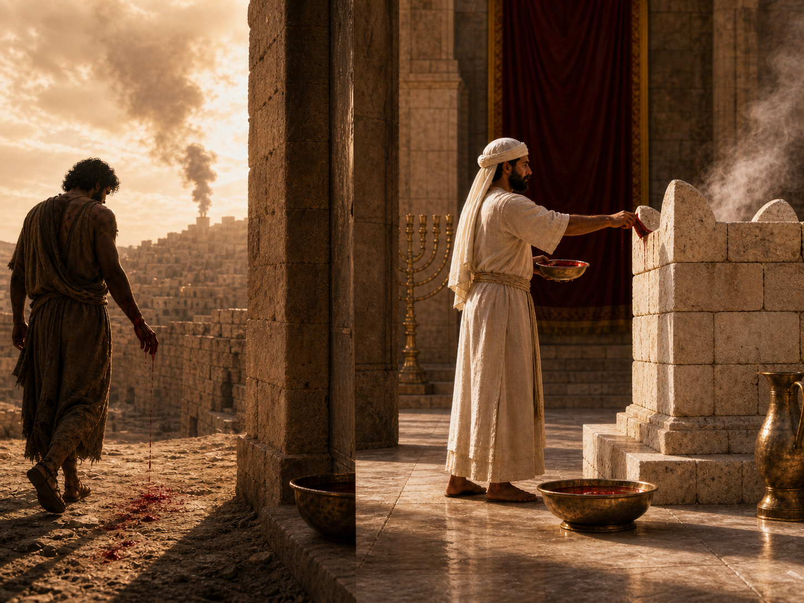

статья У жрецов кровь в двух состояниях одновременно: противоречие или неверный вывод?
⬧ У нас есть тексты Торы, где кровь выступает источником нечистоты:
| Ваикра 15:19 | Если у женщины будет истечение — если кровь станет течь из её половых органов, — то пусть она пребывает в отстранении семь дней. Всякий, кто прикоснётся к ней, будет нечист до вечера. | וְאִשָּׁה כִּי־תִהְיֶה זָבָה דָּם יִהְיֶה זֹבָהּ בִּבְשָׂרָהּ שִׁבְעַת יָמִים תִּהְיֶה בְנִדָּתָהּ וְכָל־הַנֹּגֵעַ בָּהּ יִטְמָא עַד־הָעָרֶב | ויקרא ט״ו:י״ט |
| Ваикра 15:25 | Если кровотечение у женщины продолжается много дней — не во время её отстранения — или если кровотечение продолжается после её отстранения, то во все дни этого кровотечения она будет нечиста, как в дни её отстранения. | וְאִשָּׁה כִּי־יָזוּב זוֹב דָּמָהּ יָמִים רַבִּים בְּלֹא עֶת־נִדָּתָהּ אוֹ כִי־תָזוּב עַל־נִדָּתָהּ כָּל־יְמֵי זוֹב טֻמְאָתָהּ כִּימֵי נִדָּתָהּ תִּהְיֶה טְמֵאָה הִוא | ויקרא ט״ו:כ״ה |
| Ваикра 12:2 | Передай сынам Израиля: “Если женщина зачнёт и родит сына, то она будет нечиста семь дней — нечиста, как в дни месячных”. | דַּבֵּר אֶל־בְּנֵי יִשְׂרָאֵל לֵאמֹר אִשָּׁה כִּי תַזְרִיעַ וְיָלְדָה זָכָר וְטָמְאָה שִׁבְעַת יָמִים כִּימֵי נִדַּת דְּוֹתָהּ תִּטְמָא | ויקרא י״ב:ב׳ |
С другой стороны, есть тексты, где кровью совершают очищение:
| Ваикра 4:4–7 |
(4) Пусть он приведёт быка ко входу в Шатёр Встречи, к Яхве,
возложит руку на голову быка и зарежет быка пред Яхве.
(5) И пусть этот помазанный священник возьмёт бычью кровь и внесёт её в Шатёр Встречи. (6) Затем этот священник должен обмакнуть палец в кровь и семикратно покропить кровью пред Яхве, перед завесой Святилища. (7) Пусть этот священник смажет кровью выступы на углах жертвенника для воскурений, стоящего пред Яхве в Шатре Встречи. А всю оставшуюся бычью кровь пусть выльет у основания жертвенника для всесожжений, стоящего у входа в Шатёр Встречи. |
וְהֵבִיא אֶת־הַפָּר אֶל־פֶּתַח אֹהֶל מוֹעֵד לִפְנֵי יְהוָה
וְסָמַךְ אֶת־יָדוֹ עַל־רֹאשׁ הַפָּר
וְשָׁחַט אֶת־הַפָּר לִפְנֵי יְהוָה
וְלָקַח הַכֹּהֵן הַמָּשִׁיחַ מִדַּם הַפָּר וְהֵבִיא אֹתוֹ אֶל־אֹהֶל מוֹעֵד וְטָבַל הַכֹּהֵן אֶת־אֶצְבָּעוֹ בַּדָּם וְהִזָּה מִן־הַדָּם שֶׁבַע פְּעָמִים לִפְנֵי יְהוָה אֶת־פְּנֵי פָּרֹכֶת הַקֹּדֶשׁ וְנָתַן הַכֹּהֵן מִן־הַדָּם עַל־קַרְנוֹת מִזְבַּח קְטֹרֶת הַסַּמִּים לִפְנֵי יְהוָה אֲשֶׁר בְּאֹהֶל מוֹעֵד וְאֵת כָּל־דַּם הַפָּר יִשְׁפֹּךְ אֶל־יְסוֹד מִזְבַּח הָעֹלָה אֲשֶׁר־פֶּתַח אֹהֶל מוֹעֵד |
ויקרא ד׳:ד׳–ז׳ |
| Ваикра 8:15 | А Моше зарезал его, собрал его кровь и, окунув в неё палец, помазал ею выступы на углах жертвенника со всех сторон, очищая жертвенник; оставшуюся же кровь вылил у основания жертвенника — и так освятил его, чтобы приносить на нём искупительные жертвы. | וַיִּשְׁחָט וַיִּקַּח מֹשֶׁה אֶת־הַדָּם וַיִּתֵּן עַל־קַרְנוֹת הַמִּזְבֵּחַ סָבִיב בְּאֶצְבָּעוֹ וַיְחַטֵּא אֶת־הַמִּזְבֵּחַ וְאֶת־הַדָּם יָצַק אֶל־יְסוֹד הַמִּזְבֵּחַ וַיְקַדְּשֵׁהוּ לְכַפֵּר עָלָיו | ויקרא ח׳:ט״ו |
| Ваикра 16:14–16 |
(14) Затем пусть он возьмёт кровь быка и с пальца окропит ею
восточную сторону крышки, а также семикратно покропит с пальца
кровью перед крышкой.
(15) Пусть зарежет козла как жертву за грех от народа и, внеся его кровь за завесу, сделает с кровью козла то же, что сделал с кровью быка: окропит ею крышку и место перед крышкой. (16) Так он очистит Святилище от нечистоты сынов Израиля и от их преступлений, от всех их грехов. То же он должен сделать и с Шатром Встречи, который пребывает с ними, среди их нечистоты. |
וְלָקַח מִדַּם הַפָּר
וְהִזָּה בְאֶצְבָּעוֹ עַל־פְּנֵי הַכַּפֹּרֶת קֵדְמָה
וְלִפְנֵי הַכַּפֹּרֶת יַזֶּה שֶׁבַע־פְּעָמִים
מִן־הַדָּם בְּאֶצְבָּעוֹ
וְשָׁחַט אֶת־שְׂעִיר הַחַטָּאת אֲשֶׁר לָעָם וְהֵבִיא אֶת־דָּמוֹ אֶל־מִבֵּית לַפָּרֹכֶת וְעָשָׂה אֶת־דָּמוֹ כַּאֲשֶׁר עָשָׂה לְדַם הַפָּר וְהִזָּה אֹתוֹ עַל־הַכַּפֹּרֶת וְלִפְנֵי הַכַּפֹּרֶת וְכִפֶּר עַל־הַקֹּדֶשׁ מִטֻּמְאֹת בְּנֵי יִשְׂרָאֵל וּמִפִּשְׁעֵיהֶם לְכָל־חַטֹּאתָם וְכֵן יַעֲשֶׂה לְאֹהֶל מוֹעֵד הַשֹּׁכֵן אִתָּם בְּתוֹךְ טֻמְאֹתָם |
ויקרא ט״ז:י״ד–ט״ז |
Отсюда возникает легитимный вопрос: как одна и та же субстанция (кровь) может быть одновременно источником нечистоты и инструментом очищения?
◊ Начнём с истоков: “кровь” — дам (דָּם) — и её пра-образы.
В библейском иврите слово дам (דָּם) — «кровь» — однокоренное с такими словами, как: адаом (אָדֹם) — «красный», адама (אֲדָמָה) — «земля, почва», адам (אָדָם) — «человек». Конечно не следует механически выводить одно слово из другого, но они явно образуют звуко-смысловое поле. Семитский язык выстроил эту внутреннюю близость: кровь, красный цвет, красная земля и человек, под общим цветовым признаком. Эту связь прекрасно почувствовал древний J-автор, когда обыгрывал сюжет создания человека. Так в Берешит 2:7 Яхве формирует га-адам (הָאָדָם) — «человека» — из праха га-адама (הָאֲדָמָה) — «земли». Человек мыслится как существо, вылепленное Богом, подобно гончару, из земной материи; но сама эта материя по языковой ассоциации связана с красноватой, глинистой, почти «кровяной» почвой. Так сам библейский иврит имеет в себе мощный антропологический образ: человек — это существо, вышедшее из красной земли и носящий в себе красную кровь. [1] [2]
Второй древний пра-образ состоит в том, что кровь воспринимается не как мёртвая жидкость, а как живая, действующая субстанция. Особенно это видно в рассказе о Каине и Гевеле. Когда Каин убивает брата, он не просто проливает кровь: сама кровь становится свидетелем преступления и имеет "голос". [3]
| Берешит 4:10 | И сказал [Яхве]: «Что ты наделал?! Голос крови твоего брата взывает ко Мне с земли». | וַיֹּאמֶר מֶה עָשִׂיתָ קוֹל דְּמֵי אָחִיךָ צֹעֲקִים אֵלַי מִן־הָאֲדָמָה | בראשית ד׳:י׳ |
Перед нами отголосок архаического мировосприятия, в котором кровь не является пассивной материей: она сохраняет жизнь убитого, свидетельствует о насилии и требует ответа. Именно поэтому для библейского мышления кровь — это не просто жидкость, а в прямом смысле живая субстанция. Эту мысль прямо формулируют тексты Дварим и Ваикра:
| Дварим 12:23 | [...], ибо кровь — это душа; [...]. | רַק חֲזַק לְבִלְתִּי אֲכֹל הַדָּם כִּי הַדָּם הוּא הַנָּפֶשׁ וְלֹא־תֹאכַל הַנֶּפֶשׁ עִם־הַבָּשָׂר | דברים י״ב:כ״ג |
| Ваикра 17:14 | Ибо душа всякой плоти — кровь её, в душе её. [...] | כִּי־נֶפֶשׁ כָּל־בָּשָׂר דָּמוֹ בְנַפְשׁוֹ הוּא וָאֹמַר לִבְנֵי יִשְׂרָאֵל דַּם כָּל־בָּשָׂר לֹא תֹאכֵלוּ כִּי נֶפֶשׁ כָּל־בָּשָׂר דָּמוֹ הִוא כָּל־אֹכְלָיו יִכָּרֵת | ויקרא י״ז:י״ד |
В этих текстах кровь — дам (דָּם) — уже прямо отождествляется с жизнью/душой — нефеш (נֶפֶשׁ). [4] [5]
◊ Позднейшее осмысление крови.
I) Поскольку кровь — дам (דָּם) — мыслится как живая субстанция, связанная с душой/жизнью — нефеш (נֶפֶשׁ), её нельзя употреблять в пищу. Запрет крови в Торе не является простой пищевой нормой: человек может есть мясо, но не может присваивать себе саму жизненную силу живого существа. Уже в Берешит 9:4 после разрешения есть мясо сразу ставится граница: плоть можно есть, но кровь, то есть жизнь, заключённую в плоть, есть нельзя. [6] [6.1]
| Берешит 9:4 | Только плоти с душою её, с кровью её, не ешьте. | אַךְ־בָּשָׂר בְּנַפְשׁוֹ דָמוֹ לֹא תֹאכֵלוּ | בראשית ט׳:ד׳ |
| Дварим 12:24–25 |
(24) Не употребляй её в пищу, а выливай на землю, словно воду.
(25) Не употребляй её, чтобы хорошо было и тебе, и твоим сыновьям после тебя, потому что тем самым ты сделаешь угодное Яхве. |
לֹא תֹּאכְלֶנּוּ עַל־הָאָרֶץ תִּשְׁפְּכֶנּוּ כַּמָּיִם
לֹא תֹּאכְלֶנּוּ לְמַעַן יִיטַב לְךָ וּלְבָנֶיךָ אַחֲרֶיךָ כִּי־תַעֲשֶׂה הַיָּשָׁר בְּעֵינֵי יְהוָה |
דברים י״ב:כ״ד–כ״ה |
| Ваикра 17:14 | Ибо душа всякой плоти — кровь её, в душе её. Поэтому Я сказал сынам Израиля: крови никакой плоти не ешьте, ибо душа всякой плоти — кровь её; всякий, кто ест её, будет отсечён. | כִּי־נֶפֶשׁ כָּל־בָּשָׂר דָּמוֹ בְנַפְשׁוֹ הוּא וָאֹמַר לִבְנֵי יִשְׂרָאֵל דַּם כָּל־בָּשָׂר לֹא תֹאכֵלוּ כִּי נֶפֶשׁ כָּל־בָּשָׂר דָּמוֹ הִוא כָּל־אֹכְלָיו יִכָּרֵת | ויקרא י״ז:י״ד |
Причём отметим, что D-автор в Дварим мотивирует запрет употребления крови прежде всего языком послушания и благополучия: не ешь кровь, «чтобы хорошо было тебе и твоим сыновьям» и чтобы сделать «угодное в глазах Яхве». А вот уже жреческий Р-автор в Ваикра формулирует запрет иначе: не ешь кровь, ибо это нарушение ведёт к отторжению — карет (כָּרֵת). [7]
II) Если кровь животного выпускается вне жертвенника, её требуется покрыть землёй. Это важная деталь: жреческая традиция воспринимает кровь не как обычный отход, который можно оставить на поверхности, а как живительную силу, требующую особого обращения. Если кровь не поднимается к Богу через жертвенник, она должна быть возвращена земле — адама (אֲדָמָה), из которой взята всякая плоть. Поэтому покрытие крови землёй выглядит почти как малый ритуал «захоронения» жизненной силы. Заметим лишь, что в более раннем тексте D-автор в Дварим 12:15,22; 15:22 кровь животного просто выливается на землю, как вода т.е., без ритуального контекста. [8]
| Ваикра 17:13 | Если какой-нибудь человек из сынов Израиля или из живущих среди вас переселенцев поймает на охоте пригодного в пищу зверя или птицу, то он должен будет сперва выпустить кровь и покрыть её землёй. | וְאִישׁ אִישׁ מִבְּנֵי יִשְׂרָאֵל וּמִן־הַגֵּר הַגָּר בְּתוֹכָם אֲשֶׁר יָצוּד צֵיד חַיָּה אוֹ־עוֹף אֲשֶׁר יֵאָכֵל וְשָׁפַךְ אֶת־דָּמוֹ וְכִסָּהוּ בֶּעָפָר | ויקרא י״ז:י״ג |
Поэтому в Ваикра 17:13 кровь оказывается между двумя законными направлениями: либо она используется для жертвенника, либо покрывается землёй. Но в обоих случаях человек не присваивает её себе. Кровь должна быть выведена из любого человеческого использования.
III) Следующий шаг жреческой мысли состоит в том, что кровь, обладая жизненной силой, обладает ещё и ритуально-очистительной силой. Именно поэтому кровь в жреческой системе принадлежит не человеку, а сфере божественного/ритуального. Она не является человеческой собственностью и не может использоваться произвольно. Ею можно манипулировать исключительно, и только в установленном храмовом ритуале: брать её, вносить, кропить, наносить на жертвенник — и всё это делает не обычный человек, а коѓен (כהן). "Это хорошо видно в — Ваикра 17:11.
| Ваикра 17:11 | Ибо душа плоти — в крови; и Я дал её вам на жертвенник, чтобы совершать очищение за ваши души, ибо кровь душою совершает очищение. | כִּי נֶפֶשׁ הַבָּשָׂר בַּדָּם הִוא וַאֲנִי נְתַתִּיו לָכֶם עַל־הַמִּזְבֵּחַ לְכַפֵּר עַל־נַפְשֹׁתֵיכֶם כִּי־הַדָּם הוּא בַּנֶּפֶשׁ יְכַפֵּר | ויקרא י״ז:י״א |
Здесь формула предельно ясна: Бог сам «дал» кровь на жертвенник — мизбеах (מִזְבֵּחַ) — для совершения киппер (כפר), то есть ритуального очищения/искупления. Следовательно кровь имеет такую очистительную силу, способную на восстановление порядка. [9]
◊ Граница божественного и не божественного.
Кровь в жреческой системе маркирует опасную границу между жизнью и смертью. Пока кровь — дам (דָּם) — находится внутри тела, она является знаком жизни, силы и телесной целостности. Но когда кровь выходит наружу, тело оказывается в состоянии утраты и нестабильности. Человек как бы приближается к полюсу смерти, а смерть, труп и всё, что связано с распадом живого тела, в жреческом мире являются сильнейшими источниками ритуальной нечистоты — тума (טומאה). Поэтому прикосновение к мёртвому телу в Бемидбар 19:11–13 делает человека нечистым на семь дней, а если он не проходит очищение, то оскверняет саму скинию Яхве.
Эта логика объясняется самим жреческим богословием. Яхве мыслится как источник жизни, порядка, плодородия, роста, силы, полноты и благословения. Всё, что связано с распадом, умиранием, телесной утратой, болезнью, истечением и разрушением целостности, оказывается на противоположном полюсе. Не потому, что это обязательно «грех» в моральном смысле, а потому, что такое состояние не соответствует пространству максимальной отделённости и святости — кодеш (קֹדֶשׁ). Поэтому человек в состоянии тума (טומאה) временно не может приближаться к святыне, пока не будет восстановлена его ритуальная совместимость со священным пространством.
| Бемидбар 19:11–13 |
(11) Тот, кто прикоснётся к мёртвому телу какого-либо человека, будет нечист семь дней.
(12) Он должен очиститься на третий день и на седьмой день — тогда станет чист. Но если он не очистится, то останется нечист. (13) Всякий, кто прикоснётся к мёртвому телу человека и не очистится, оскверняет скинию Яхве. |
הַנֹּגֵעַ בְּמֵת לְכׇל־נֶפֶשׁ אָדָם
וְטָמֵא שִׁבְעַת יָמִים
הוּא יִתְחַטָּא־בוֹ בַּיּוֹם הַשְּׁלִישִׁי וּבַיּוֹם הַשְּׁבִיעִי יִטְהָר וְאִם־לֹא יִתְחַטָּא בַּיּוֹם הַשְּׁלִישִׁי וּבַיּוֹם הַשְּׁבִיעִי לֹא יִטְהָר כׇּל־הַנֹּגֵעַ בְּמֵת בְּנֶפֶשׁ הָאָדָם אֲשֶׁר־יָמוּת וְלֹא יִתְחַטָּא אֶת־מִשְׁכַּן יְהוָה טִמֵּא |
במדבר י״ט:י״א–י״ג |
| Ваикра 15:19 | Если у женщины будет истечение — если кровь станет течь из её тела, — то пусть она пребывает в состоянии отстранения семь дней. Всякий, кто прикоснётся к ней, будет нечист до вечера. | וְאִשָּׁה כִּי־תִהְיֶה זָבָה דָּם יִהְיֶה זֹבָהּ בִּבְשָׂרָהּ שִׁבְעַת יָמִים תִּהְיֶה בְנִדָּתָהּ וְכׇל־הַנֹּגֵעַ בָּהּ יִטְמָא עַד־הָעָרֶב | ויקרא ט״ו:י״ט |
| Ваикра 12:2–4 |
(2) Передай сынам Израиля: “Если женщина зачнёт и родит сына, то она будет нечиста
семь дней — нечиста, как в дни месячных.
(3) На восьмой день должна быть обрезана крайняя плоть ребёнка. (4) А она тридцать три дня будет пребывать в кровях очищения: ни к какой святыне не должна прикасаться и в святилище не должна входить, пока не исполнятся дни её очищения”. |
דַּבֵּר אֶל־בְּנֵי יִשְׂרָאֵל לֵאמֹר
אִשָּׁה כִּי תַזְרִיעַ וְיָלְדָה זָכָר
וְטָמְאָה שִׁבְעַת יָמִים
כִּימֵי נִדַּת דְּוֹתָהּ תִּטְמָא
וּבַיּוֹם הַשְּׁמִינִי יִמּוֹל בְּשַׂר עׇרְלָתוֹ וּשְׁלֹשִׁים יוֹם וּשְׁלֹשֶׁת יָמִים תֵּשֵׁב בִּדְמֵי טׇהֳרָה בְּכׇל־קֹדֶשׁ לֹא־תִגָּע וְאֶל־הַמִּקְדָּשׁ לֹא תָבֹא עַד־מְלֹאת יְמֵי טׇהֳרָהּ |
ויקרא י״ב:ב׳–ד׳ |
Иными словами, само рождение ребёнка не является грехом: напротив, это событие жизни. Но роды связаны с кровью, раскрытием тела и переходом новой жизни наружу. Именно поэтому женщина временно не прикасается к святыне и не входит в святилище — микдаш (מִקְדָּשׁ), пока не завершится период очищения. Текст говорит не о моральной вине, а о ритуальной несовместимости состояния крови, родов и телесной открытости с пространством святости. [10]
То же видно и в законе о менструальной крови. Нидда (נִדָּה) — это не оценка женщины как «греховной» или «неполноценной», а обозначение временного состояния ритуального отстранения. Кровь, вышедшая из тела вне жертвенника и вне контроля коѓена (כהן), становится знаком телесной нестабильности. Она не уничтожает святость сама по себе, но делает человека временно несовместимым с её пространством.
Так жреческая система проводит важную границу: святость Яхве связана с жизнью, полнотой и порядком, а неконтролируемая телесная утрата — с областью распада, смерти и нечистоты. Поэтому кровь в одном состоянии может отстранять человека от святыни, а в другом, когда она взята и направлена ритуалом, очищать саму святыню. [11]
◊ Широкий жреческий принцип.
К этому добавляется и более широкий жреческий принцип: состояние нечистоты создаёт не только кровь — дам (דָּם), но и всякое неконтролируемое истечение из тела. Для жреческого мышления тело должно сохранять свою целостность и внутренний порядок. Когда же из него выходит то, что должно оставаться внутри или выходить только в строго определённом жизненном контексте, человек оказывается в состоянии ритуальной нестабильности — тума (טומאה), которое несовместимо с пространством святости (קֹדֶשׁ).
Поэтому Ваикра 15 рассматривает разные типы телесных истечений как состояния, временно несовместимые со святыней. В Ваикра 15:2–15 говорится о мужском истечении — зов (זוֹב); в Ваикра 15:25–30 — о длительном женском кровотечении вне обычного периода нидда (נִדָּה); в Ваикра 15:16–18 — о семенном истечении, шихват-зера (שִׁכְבַת־זֶרַע). Во всех этих случаях речь идёт не о моральной вине, а о нарушении телесной границы.
◊ Кровь, как физическая граница.
Важно увидеть ещё одну функцию крови: кровь может быть не только источником нечистоты и средством очищения, но и знаком границы. В Шмот 12 кровь песахальной жертвы наносится на косяк двери — мезузот (מְזוּזֹת) — и на верхнюю перекладину двери — машкоф (מַשְׁקוֹף). Здесь кровь не очищает жертвенник и не делает человека нечистым, она работает как видимый знак различения: этот дом принадлежит Израилю, это пространство отмечено Яхве, сюда разрушительная сила не должна войти. [12]
Поэтому кровь в Шмот 12 выступает как физический маркер границы. Она разделяет два пространства: снаружи — Египет как пространство удара, смерти и суда; внутри — дом Израиля как пространство, отмеченное знаком принадлежности Яхве. Кровь на двери говорит: здесь не просто дом, здесь защищённая граница; здесь те, кого нужно миновать; здесь жизнь отделена от пространства смерти.
◊ Знак завета - это про границу.
Следующая важная функция крови — в том, что кровь может быть знаком завета - брита (בְּרִית). Сейчас нужно уточнить: в Шмот 24 речь идёт не столько о «помазании», сколько об окроплении кровью. Но логика остаётся той же: кровь становится видимым маркером тех, кто включён в священный союз с Яхве. Как в Шмот 12 кровь на дверях отделяла дома Израиля от египетского пространства смерти, так в Шмот 24 кровь отделяет народ как сторону завета. Она показывает: вот те, с кем заключён договор; вот община, отмеченная кровью союза (בְּרִית). [13]
Сцена устроена очень выразительно. Моше берёт кровь жертв и разделяет её: часть крови направляется к жертвеннику, а часть — к народу. Жертвенник представляет сторону Яхве, народ представляет сторону Израиля. Поэтому кровь оказывается между двумя участниками договора. Она то общее, что связывает между собой и народ, и Бога. Завет получает не только словесную форму — через «книгу завета», сефер га-брит (סֵפֶר הַבְּרִית), — но и телесно-ритуальное оформление через кровь.
| Шмот 24:6–8 |
(6) Моше взял половину крови и налил в чаши, а половину крови окропил на жертвенник.
(7) Затем он взял книгу завета и прочитал вслух народу. Они сказали: «Всё, что говорил Яхве, исполним и будем слушать». (8) Тогда Моше взял кровь, окропил ею народ и сказал: «Вот кровь завета, который Яхве заключил с вами на основании всех этих слов». |
וַיִּקַּח מֹשֶׁה חֲצִי הַדָּם
וַיָּשֶׂם בָּאַגָּנֹת
וַחֲצִי הַדָּם זָרַק עַל־הַמִּזְבֵּחַ
וַיִּקַּח סֵפֶר הַבְּרִית וַיִּקְרָא בְּאׇזְנֵי הָעָם וַיֹּאמְרוּ כֹּל אֲשֶׁר־דִּבֶּר יְהוָה נַעֲשֶׂה וְנִשְׁמָע וַיִּקַּח מֹשֶׁה אֶת־הַדָּם וַיִּזְרֹק עַל־הָעָם וַיֹּאמֶר הִנֵּה דַם־הַבְּרִית אֲשֶׁר כָּרַת יְהוָה עִמָּכֶם עַל כׇּל־הַדְּבָרִים הָאֵלֶּה |
שמות כ״ד:ו׳–ח׳ |
Поэтому Шмот 24 важно поставить рядом с Шмот 12. В Шмот 12 кровь на дверях маркирует дома, которые должна миновать смерть. В Шмот 24 кровь маркирует народ, который вступает в союз с Яхве. В обоих случаях кровь работает как пограничный знак: она отделяет «своих» от «чужого пространства», жизнь от смерти, народ завета от внешнего мира. Кровь не просто проливается; она создаёт видимую границу принадлежности.
◊ Так как кровь и очищает, и загрязняет?!
Так как же кровь одновременно и очищает, и загрязняет? Ответ в том, что жреческая традиция различает не «две разные крови», а два разных ритуальных состояния крови. Неконтролируемый выход крови из тела — менструация, роды, патологические истечения — относится к полюсу границы между жизнью и смертью. Такая кровь обозначает утрату телесной целостности, приближение к сфере распада и потому создаёт состояние ритуальной нечистоты — тума (טומאה). Но кровь, взятая в жертве и направленная коѓеном (כהן) по установленному обряду, действует иначе: она становится не знаком утраты, а управляемой жизненной силой, введённой в сакральный порядок.
1. В Ваикра 4 это особенно ясно видно на примере жертвы хаттат (חטאת). Хаттат здесь лучше понимать не как «жертву за грех» в узком моральном смысле, а как очистительную жертву. Когда приносится хаттат (חטאת), кровь животного используется для очищения сакрального пространства. Если согрешил помазанный коѓен (כהן) или вся община Израиля, кровь вносится глубже: её заносят в Шатёр Встречи, ею кропят перед завесой и мажут рога жертвенника благовоний. Если же речь идёт о начальнике или простом человеке, кровь не вносится внутрь святилища, а наносится на рога жертвенника всесожжения. [14]
Эта разница показывает тонкую жреческую логику: чем выше статус нарушителя, тем глубже нарушение затрагивает сакральную систему.
2. В Ваикра 16 эта логика достигает максимума в ритуале Йом Кипура. Коѓен гадоль (כהן גדול) берёт кровь тельца и козла, вносит её за завесу и кропит перед капорет (כפרת), то есть перед крышкой ковчега, в самом внутреннем пространстве святилища. Текст прямо говорит, что так он очищает святилище от нечистот сынов Израиля, от их преступлений и от всех их грехов. Это решающий момент: жертвенная кровь не оскверняет Святое Святых. Напротив, она очищает его. [15]
3. Важен мотив крови на рогах жертвенника. Рога жертвенника — карнот га-мизбеах (קַרְנוֹת הַמִּזְבֵּחַ) — не декоративная деталь. В жреческой системе это точки сакральной силы, места контакта между жертвой, жертвенником и священным пространством. Когда кровь наносится на рога жертвенника, она как бы обновляет и очищает сам сакральный механизм. Жертвенник снова становится пригодным для служения, потому что его контактные точки очищены жизненной силой крови.
Важное уточнение: жертвенная кровь не столько «очищает человека» в нашем привычном психологическом смысле, сколько очищает святилище. Ритуальные нечистоты, нарушения и грехи общины как бы накапливаются вокруг священного центра и загрязняют сакральное пространство. Это загрязнение угрожает самому пребыванию Яхве среди Израиля. Поэтому святилище необходимо очищать.
| Неконтролируемая кровь | Менструация, роды, патологические истечения. | Кровь выходит из тела сама, вне жертвенника и вне ритуального управления. | Результат: тума (טומאה), временное отстранение от святыни. |
| Ритуально направленная кровь | Хаттат (חטאת), кровь на рогах жертвенника, ритуал Йом Кипура. | Кровь берётся, переносится и применяется коѓеном (כהן) по установленному обряду. | Результат: киппер (כפר), очищение святилища и восстановление порядка. |
И так жреческая логика не говорит: «одна кровь плохая, другая хорошая». Она говорит иначе: кровь опасна в любом случае, потому что она несёт жизнь. Но действие этой силы зависит от того, в каком режиме она находится. Вне ритуала кровь обозначает утрату и нечистоту, а внутри ритуала та же кровь способна очищать священное пространство и удерживать присутствие Яхве среди Израиля.
◊ Жреческий принцип - хочет стать космическим!
Так кровь — дам (דָּם) — связана не только с телом и жертвенником, но и вообще с самой землёй — адама (אֲדָמָה). Если кровь выходит из тела в результате убийства, то она не просто создаёт личную вину убийцы. Она загрязняет пространство, на котором была пролита. Иными словами, переносится та же жреческая логика, неконтролируемая, хаотично пролитая кровь (убийство) загрязняет уже окружающую землю. [16]
| Бемидбар 35:33 | Не оскверняйте землю, на которой вы обитаете, ведь кровь оскверняет землю. Землю нельзя очистить от крови, которая пролита на ней, кроме как кровью того, кто пролил эту кровь. | וְלֹא־תַחֲנִיפוּ אֶת־הָאָרֶץ אֲשֶׁר אַתֶּם בָּהּ כִּי הַדָּם הוּא יַחֲנִיף אֶת־הָאָרֶץ וְלָאָרֶץ לֹא־יְכֻפַּר לַדָּם אֲשֶׁר שֻׁפַּךְ־בָּהּ כִּי־אִם בְּדַם שֹׁפְכוֹ | במדבר ל״ה:ל״ג |
Логика становится шире, почти космической: земля сама может быть осквернена кровью. Поэтому убийство плохо не только как моральное преступление против человека, но и как ритуально-пространственное нарушение. Пролитая кровь как бы «впитывается» в землю и делает её нечистой перед Яхве.
Особенно важно, что текст использует тот же корень киппер (כפר), который в других местах связан с очищением/искуплением. Земля, на которой пролита кровь, нуждается в киппер (כפר), то есть в восстановлении нарушенного порядка. Но это восстановление происходит не обычной жертвой и не произвольным ритуалом. Текст предлагает зеркальное решение: кровь убийцы отвечает за кровь убитого. Иначе говоря, хаотически пролитая кровь требует судебного восстановления порядка.
Здесь важно не понимать это как простое «ещё одно кровопролитие». Смысл жреческой логики тоньше: одна кровь была выпущена вне закона, вне ритуала, вне порядка — и потому загрязнила землю. Ответ должен быть не хаотическим, а установленным правом: виновный передаётся суду, и только так кровь перестаёт быть бесконтрольным источником загрязнения. Поэтому Бемидбар 35:33 показывает, что кровь может загрязнять не только человека и не только святыню, но и саму землю.
⤷ Сноски
[6] Jonathan Klawans, Impurity and Sin in Ancient Judaism, Oxford University Press, 2000, pp. 21–42.
[7] Karet. Encyclopedic Dictionary of Brockhaus and Efron. St. Petersburg, 1890–1907.
[8] Zev Farber, “The Mitzvah of Covering the Blood of Wild Animals,” TheTorah.com, 2015.
[10] Zev Farber, “The Parturient’s Days of Purity: From Torah to Halacha,” TheTorah.com, 2017.
[14] Yitzhaq Feder, “Expiating with Blood,” TheTorah.com, 2015.
[17] Yitzhaq Feder, “Meat or Murder?” TheTorah.com, 2013.